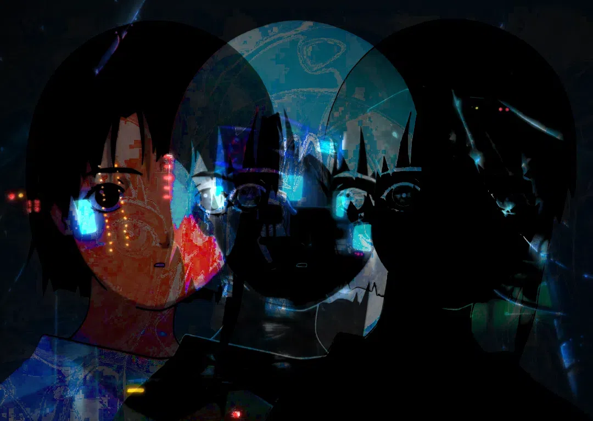

I finally got a blog made, now u mfs can see the inside of my mind, well maybe.ehhhhh its a bit buggy, ill have to fix it later. im just happy to finally have it wtf, 2008 internet here we come! todo: add ajax buttons with a container for the posts, so u can still listen to music while reading!
welcome to site version 0.5 i guess
